Алексей Чистов
agechistov@gmail.com | linkedin.com/in/agechistov | Discord: hulvdan
Web-site's version in ENGLISH 🇬🇧
GameDev проекты, над которыми я работал:
Roads of Horses - C# Source, C++ Port Source (начиная с 10/2023)
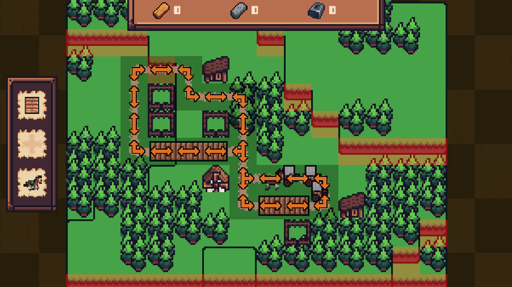
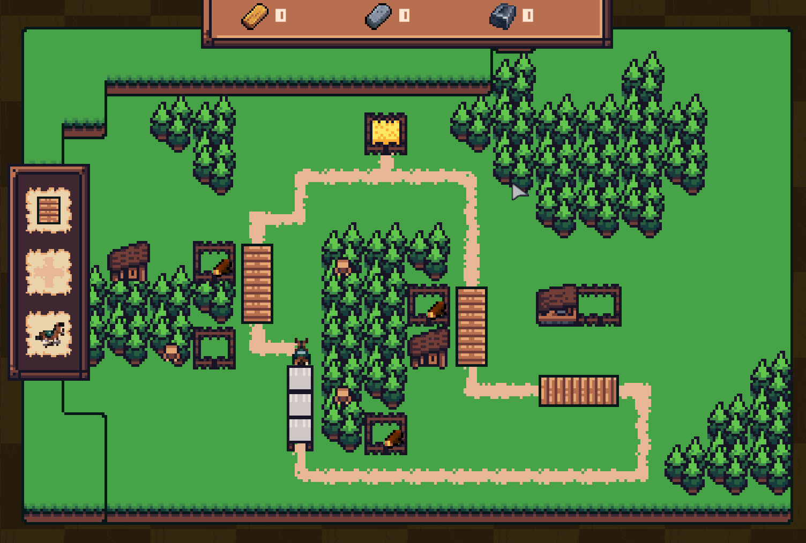
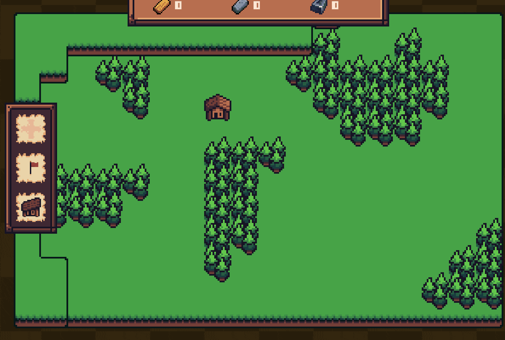
Видеоигра, разрабатывать которую я начал на Unity, C#. Сейчас портирую на C++. Вдохновленный «Handmade Hero», я укрепляю навыки программирования, изучая работу CPU, работу с памятью, рендеринг, аудио, ASM и др.
Из интересного в техническом плане:
- На C++ я пишу код в основном "от руки", не используя какие-либо фреймворки вроде GLFW / SDL, с целью как можно лучше изучить различные аспекты языка и научиться разрабатывать комплексные вещи.
- Ручная работа с памятью.
- Горячая перезагрузка C++ кода с сохранением состояния при перезагрузках. Я слышал, что при разработке игр очень важно сохранять как можно меньшую длительность итераций.
- По той же причине собираю проект через один юнит трансляции (single translation unit build, unity build).
- Не пытаюсь всё оборачивать в шаблоны, классы и разделять функции на более мелкие по принципам "Чистого Кода". Сохраняю код максимально простым и прямолинейным.
- Использую clang-tidy и clang-format для сохранения качества и консистентности кода на уровне. Всё же у меня нет коммерческого опыта разработки на C++, поэтому мне очень важно иметь дополнительный "взгляд со стороны".
3D Пончик (2024)

Это моё исследование 3D, матричных трансформаций и линейной алгебры на C++ без использования каких-либо библиотек с целью укрепления основ.
The Clocktower Letter – itch.io (2023)
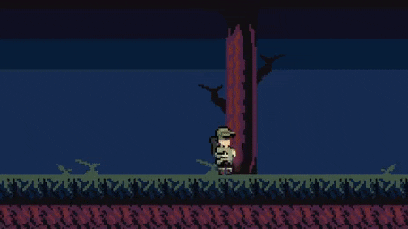
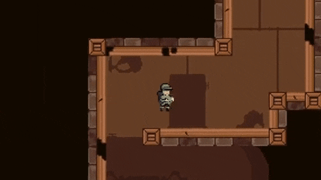
Короткая игра платформер для Metroidvania 21 game jam. Работал в качестве разработчика в распределённой команде из 4-х человек.
Другие небольшие прототипы (2016-2023):
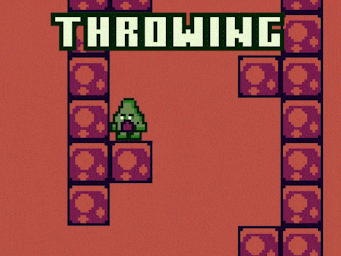
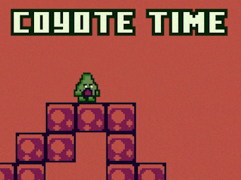
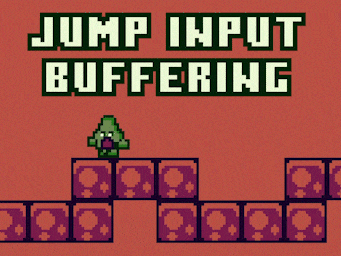
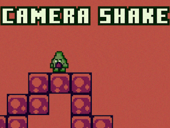
Avocado - GitHub. Некоторые фишки, применённые к платформеру на Unity, C#.
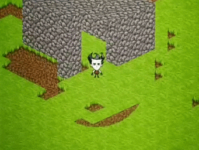
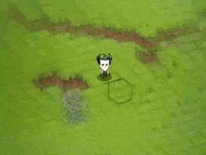
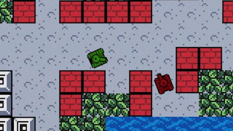
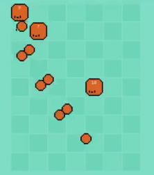
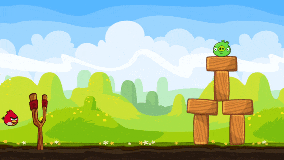
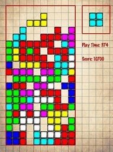
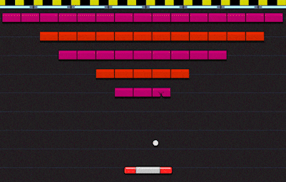
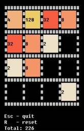
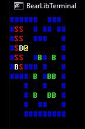
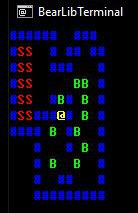
Инструменты, над которыми я работал:
Dark Souls 3 Cheat Sheet tool – Reddit (2018)
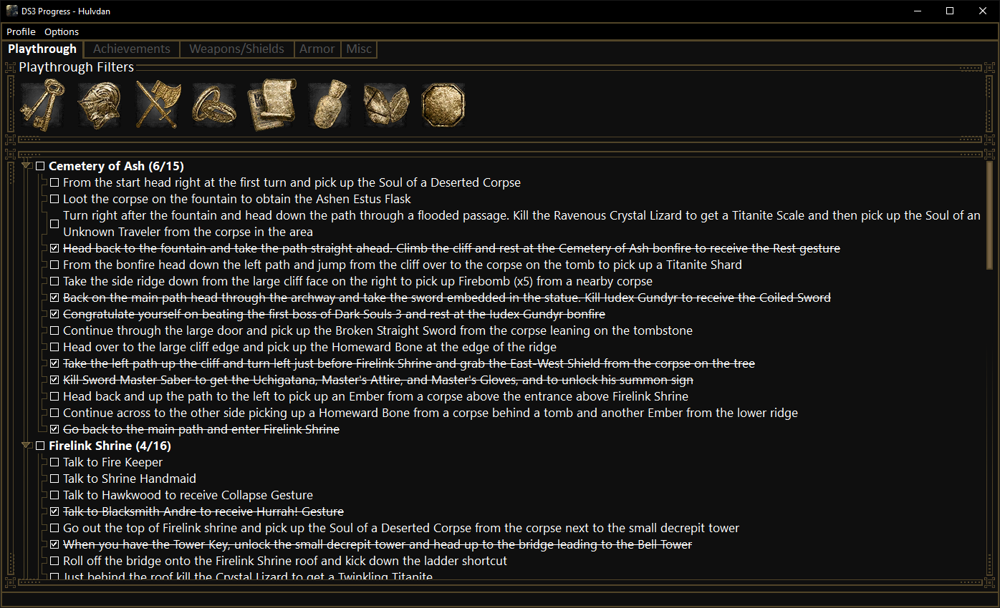
Программа для ручного отслеживания прогресса в Dark Souls 3 (Python, PyQt)
Другое
Monster Hunter: World Printable Monsters Weaknesses Booklet – Reddit post, Updated Reddit post (2018, 2021)
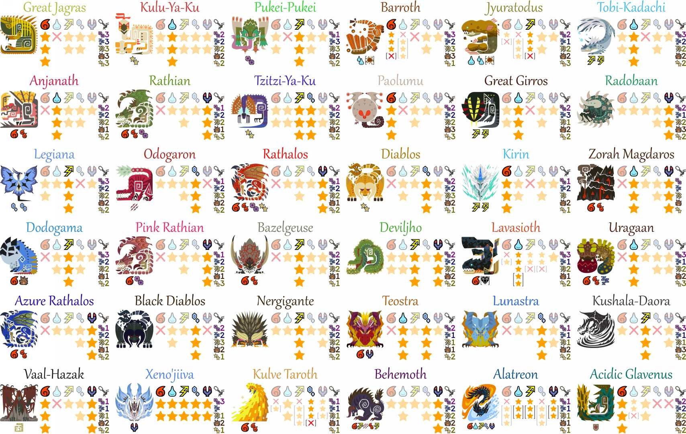
Набор изображений/документов для печати, что отображает уязвимости монстров в игре (Python, Pillow)
Credited Work
- Vanilla Tweaks мод для Terraria от gardenapple - Поделился кодом для ускорения Extractinator-а (C#) (2017)
- Run on Save расширение VS Code от pucelle - Исполнение команд VS Code-а при сохранении файлов (TypeScript) (2020)
Говоря о GameDev-е
Я знаком с:
- C++, Cocos2d-x, entt, box2d, некоторыми графическими библиотеками для терминала
- Unity, C#
- В основном 2D. Однако, у меня был небольшой опыт работы с 3D
Я имею базовое представление о:
- Software рендеринге, input, и аудио программировании на Windows
- Программировании шейдеров, паковании текстур, программирования звуков, процедурной генерации, деревьях поведения (AI), инструментах
- Том, как люди разрабатывают сетевые фичи в играх, в частности, мультиплеер
Абсолютно Нерелевантно
These people and their works totally rock my socks: Jonathan Blow с его презентациями JAI, Casey Muratori и его образовательные материалы Performance-Aware Programming и Handmade Hero.
(Обновлено 01 March 2024)